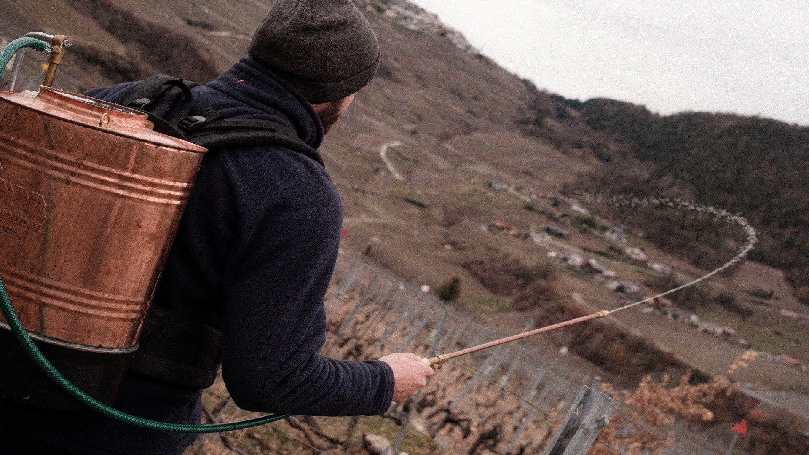

Biodynamie
La biodynamie est une méthode de culture qui repose sur l’utilisation de préparations naturelles et le respect des cycles de la nature, comme les rythmes lunaires. Elle vise à renforcer la santé du sol et des plantes, en favorisant la biodiversité et l’équilibre de l’écosystème. Pour moi, la biodynamie est une évidence, d’une part après avoir dégusté des vins issus de cette méthode, mais aussi parce que ces pratiques sont, pour la plupart, des savoir-faire transmis de génération en génération, profondément ancrés dans les traditions agricoles.
